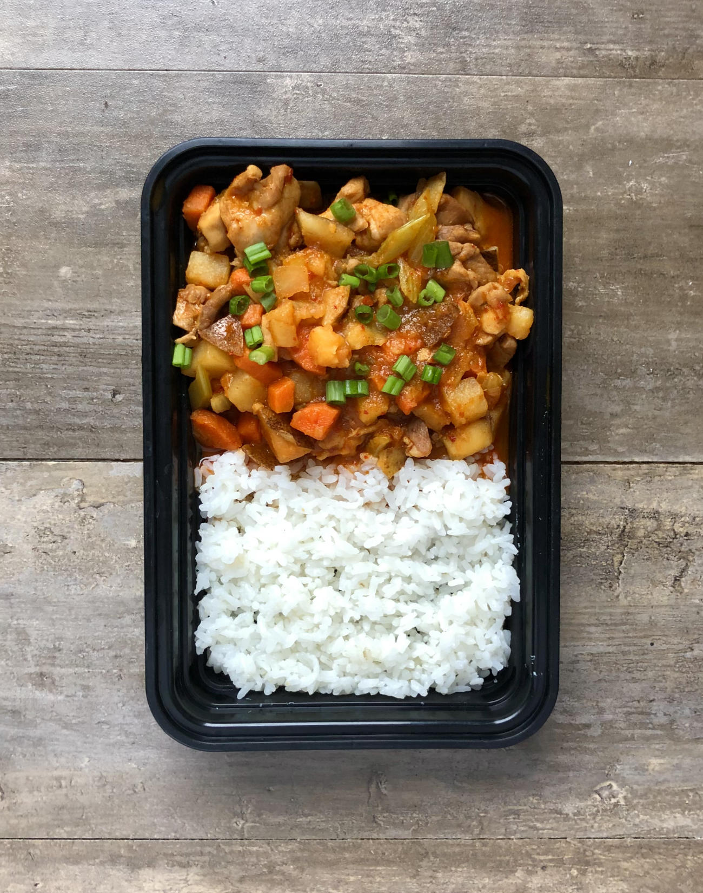

Dakdoritang
Description
A Spicy Korean Chicken Stew Dish. Intense flavors from gochujang and gochugaru.
Ingredients
For the Rice
For the Stew
- Boneless Skinless Chicken Thigh
- Celery
- Carrot
- Russet Potato
- Minced Garlic
- Green Onion
- Chicken Stock
- Oil
For the Sauce
- Gochujang
- Gochugaru
- Honey
- Soy Sauce
- Cornstarch Slurry
Steps
- Cook Rice
- Wash and cut all vegetables
- Cut carrots, celery, and potatoes into a large dice
- Season chicken with salt and pepper
- In a large stock pot over medium high heat add oil and veggies
- Add chicken